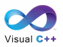
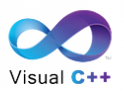
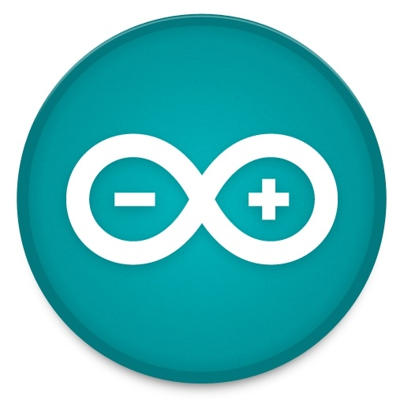
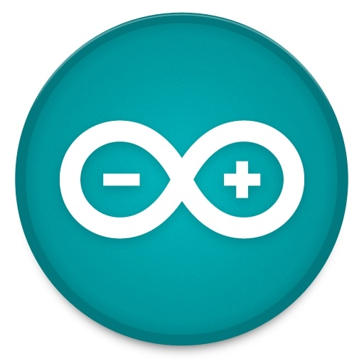
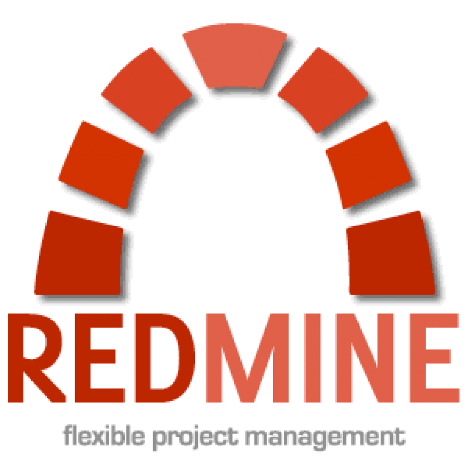
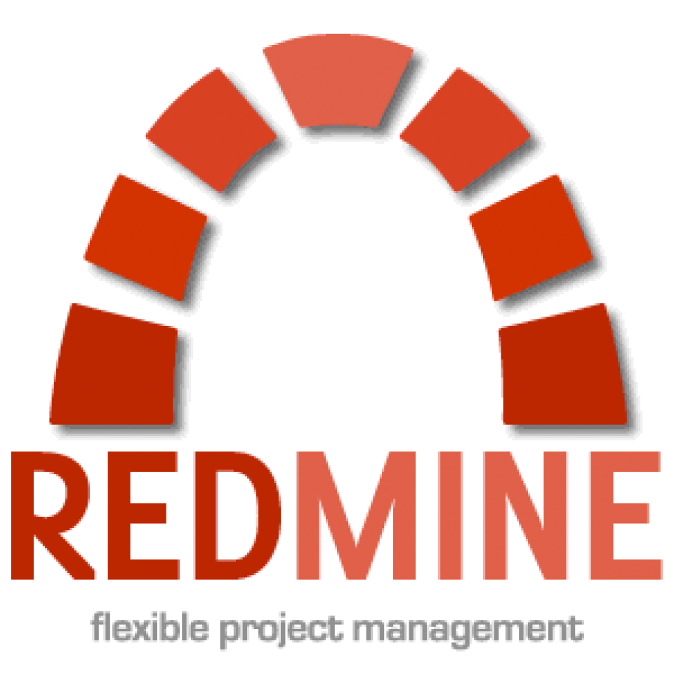

簡裕維
嘎都, Gaduofoxb1249@gmail.com
學歷：
- 學士 (2008~2012)：
- 慈濟大學醫學資訊學系
- 碩士 (2013~)：
- 慈濟大學醫學資訊學研究所
擅長程式語言：


 

擅長專案平台：
 

 

活動：
作品：
碩士
- 2014, 自動擷取心臟內科病患病史資訊
-
醫師常常需要翻閱病歷了解病人的過去病史，通常是一張一張的翻閱，即便是電子病歷也是如此，若有個系統能讓醫師快速了解該病人過去有哪些病史，並能清楚說明根據哪些線索，不僅能節省醫師很多時間，並能在醫學統計研究上有些幫助。
本研究希望探討自然語言處理技術對於病歷上的資訊作擷取，是否因為科技的導入，讓系統分析大量資料，使醫生可作回溯性研究。
- 2013, IHE-C Connectathon 2013 (09/22 ~ 09/28)
-
延續 "建立新世代個人化雲端健康記錄醫療資訊服務系統"，這次前往北京天壇醫院聯測主要角色為：
-
Cross-Enterprise Document Sharing (XDS)
- Document Source
- Document Consumer
-
Patient Identifier Cross-Referencing (PIX)
- PIX Source
- PIX Manager
- PIX Consumer
-
Patient Demographics Query (PDQ)
- PDQ Supplier
- PDQ Consumer
-
Consistent-Time(CT)
- Time Client
-
Cross-Enterprise Document Sharing (XDS)
碩士前暑期
學士
- 2013, IHE-C Connectathon 2013 (03/17 ~ 03/23)
-
在 GitHub 上，IHE-IT-Infrastructure，實作IHE XDS、PIXPDQ、ATNA、CT 的 Client 端專案。
是與台北醫學大學產學合作的計畫 - 建立新世代個人化雲端健康記錄醫療資訊服務系統，主要建立醫療雲端服務，記錄每個人的健康記錄。
我們遵照 IHE 的規範實作，這次計畫完成的模組(系統角色)有 Cross-Enterprise Document Sharing (XDS) 之中的 Repository, Registry，分別是分散儲存病歷 (健康記錄)、集中管理索引。
為什麼要遵照 IHE 規範? 在病歷(健康記錄) 交換常遇到不同廠商之間有不同交換規格/協定，對於醫院來說，招標廠商開發/維護都是很大的成本;遵照 IHE 規範的概念即是讓醫療系統模組能 "熱插拔" 每個廠商遵照標準的記錄內容、遵照相同的交換架構，讓系統之間的耦合降低，以達到可取代性、可擴充性。
Connectathon (聯測) 是如何進行 ? 聯測之前會先請各廠商用規定的測試軟體測試系統，並且上傳結果，完成一定比例後，招集各廠商 (若是 IHE-China) 到北京天壇醫院為期 5 天的測試，測試大會規定的 100、200項(視各廠報名的系統角色而定)的 Use Case，每個廠商扮演一個系統角色，必須與至少三家廠商扮演的不同角色連接測試。五天內完成所有項目，大會另選時間地點頒發證明。
- 2012, 邊做、邊說、邊記-隨身護理記錄輔助系統
-
大學畢業專題，開發一套隨身護理記錄輔助系統，幫助護理人員在照護病人完畢後，可以利用說話的方式記錄護理記錄，使得護理記錄具有完整性並節省記錄的時間。 more ...
- 2011, Google App Engine
-
在 GAE 作品之一 慈濟大學排球代表隊 是由先前 PHP 網頁改版而來，因為 GAE 提供免費而穩定的平台，所以移植到此。
除了代表隊網站還有像是 Facebook 文字遊戲，或是環島地圖，用來記錄 GPS座標、照片、當下的心情寫照。
GAE 是一個讓大學生可以充分發揮作業的平台，有完整的 MVC 架構、Google 服務、。
- 2009, 計算機中心工讀生(至畢業)
-
工作主要內容：
- 維修電腦
- 設定電腦周邊設備
- 網路管理(牽線、拆裝網路設備)
在計算機中心向大哥們學習如何架設 Server、維修電腦，很多事情是系上不會教的，所以在計算機中心，若有心想學，大哥們都很願意分享自己的解決問題的經驗。